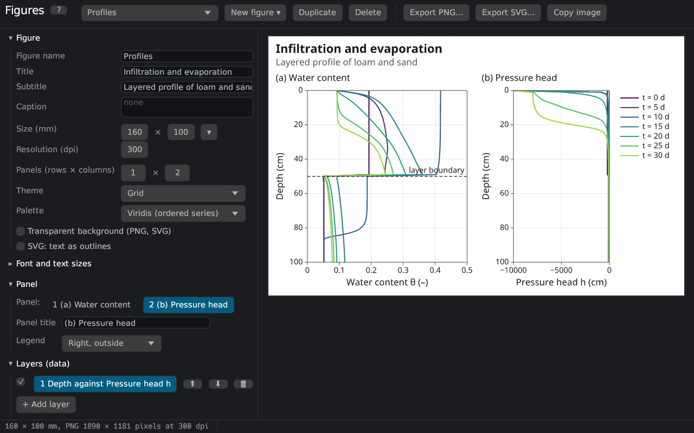
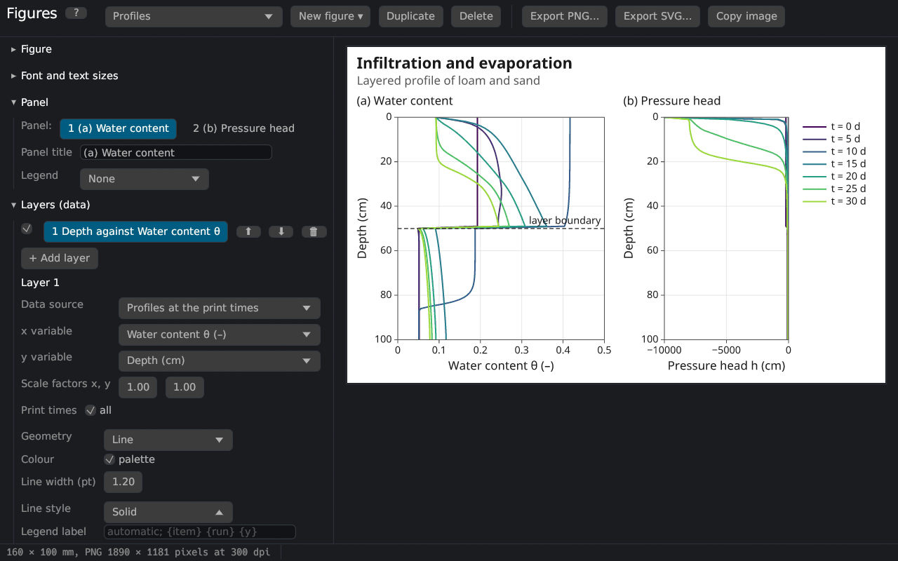
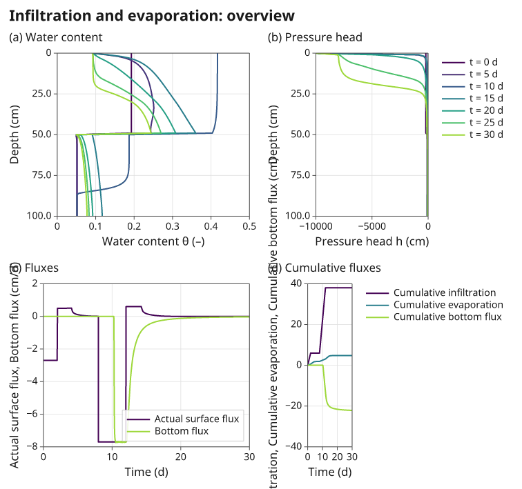

Figure editor
The figure editor makes diagrams of the results, the input and measured data for reports, papers and presentations: with a title, subtitle and caption, several panels, axis titles with sub- and superscripts, annotations, a choice of fonts, colours and line styles, and the export as PNG or SVG. It opens in a window of its own with Results → Figures in the list on the left or View → Figures (new window). The figures belong to the project: they are saved in the .h1dr file (the HYDRUS-1D project files cannot store them).


The window
| Part | Contents |
|---|---|
| tool bar | the figure shown (list of the figures of the project), New figure (templates), Duplicate, Delete, Export PNG…, Export SVG…, Copy image |
| left | the settings, in sections: Figure, Font and text sizes, Panel, Layers (data), Axes, Annotations, Data files, Runs for comparison, Symbols and markup |
| right | the preview: the figure as it will be exported, at its proportions |
| status bar | under the mouse: the panel and the values of its axes (and the relative position 0–1); otherwise the size of the PNG and notes about the data |
Every change shows at once in the preview. A click on a panel of the preview selects it for the settings on the left. F1 or ? shows this topic.
Building a figure
- New figure ▾ offers templates: water content and pressure head profiles, concentration profiles, observation nodes, breakthrough curves, surface and bottom fluxes, the cumulative water balance, the atmospheric forcing, the retention curve and conductivity, the mass balance error, simulated against measured data, observed and fitted values of a parameter estimation, the comparison of runs and an overview with four panels. Templates that need other data (solutes, observation nodes, measured data, kept runs) are greyed out.
- Change the size, the title and the look in the section Figure.
- Choose the data of each panel in Layers (data): the source, the x and the y variable.
- Adjust the axes, add annotations, and export.
Figure
| Setting | Meaning |
|---|---|
| Figure name | name in the list and the default file name; not drawn |
| Title, Subtitle | above the figure (the subtitle smaller, grey); empty: none |
| Caption | under the figure, wrapped to its width |
| Size (mm) | width × height in millimetres; ▾ offers common sizes (1, 1.5 and 2 journal columns of 85, 120 and 170 mm, a 16:9 slide, A4 landscape) |
| Resolution (dpi) | dots per inch of the PNG (300 for print, 150–200 for screens) |
| Panels (rows × columns) | number of diagrams in a grid (up to 4 × 4) |
| Theme | Grid (frame and light grid), Classic (axis lines left and bottom), Minimal (no frame), Dark (presentations) |
| Palette | colours of the series in order: Okabe–Ito, Tableau 10, Viridis, Grey |
| Transparent background | the exported files have no background |
| SVG: text as outlines | see Export |
The size is the size in the document: the fonts are given in points (1 pt = 1/72 inch ≈ 0.35 mm) and keep their size whatever the resolution. Journals usually ask for text of at least 6–8 pt at the printed size; the defaults (8.5 pt for the numbers, 10 pt for the axis titles) fit a figure of 85–170 mm.
The palettes follow the advice to use colours that remain distinguishable for readers with a colour vision deficiency and in print Crameri et al. (2020): Okabe–Ito, the default, is the palette of Okabe and Ito (2008) (Wong (2011)); Viridis is a perceptually uniform sequence Smith and van der Walt (2015) for series in an order such as print times or depths; Grey for black-and-white print.
Font and text sizes
Font offers Noto Sans, bundled with the program, and the font families installed on the computer. Noto Sans has all the symbols of soil physics: Greek letters, sub- and superscript digits and letters, the mathematical signs and arrows (from Noto Sans Math). Characters that a chosen system font lacks are taken from Noto Sans, so θ, ≤ or ⁻¹ always appear. The sizes of the title, subtitle, caption, panel titles, axis titles, tick labels and legend are set separately.
Text: markup and symbols
All texts (titles, axis titles, legend labels, annotations) understand the markup of this help:
| Write | Shows |
|---|---|
θ_{s} | θₛ (subscript) |
cm^{3} cm^{−3} | cm³ cm⁻³ (superscript) |
*K* | italic |
**Loam** | bold |
\* | a literal |
A line break in the title or the caption starts a new line. The section Symbols and markup has buttons for the common symbols (θ, α, ψ, Δ, °, ±, ≤, √, ∂, →, ², ⁻¹, ₛ …): a click copies the symbol, Ctrl+V pastes it.
Panels and layers
A panel is one diagram with its axes, legend and annotations. Its title (e.g. "(a) Loam") and the position of its legend (a corner inside the plot area, outside on the right, below, or none) are set in the section Panel; with several panels the row of numbers selects the panel.
A panel shows one or more layers. A layer takes its x and y values from two columns of a data source; it draws one series for each selected item (observation node, print time, material, data set) and run. The check box shows or hides a layer, ⬆ ⬇ change the drawing order (later layers are drawn on top), 🗑 removes it, + Add layer adds a copy of the selected one.


Data sources
| Source | Items | Variables |
|---|---|---|
| Boundary fluxes and heads (T_Level) | – | time, time step, iterations; potential and actual surface flux, bottom flux, transpiration, runoff, precipitation; their cumulative values, infiltration, evaporation; heads at the surface, in the root zone and at the bottom; storage, snow; temperatures; Peclet and Courant numbers; per solute: fluxes, cumulative fluxes, concentrations and root uptake |
| Observation nodes | nodes | time; h, θ, temperature, flux, concentrations (and the values of the matrix / immobile region) |
| Profiles at the print times | print times | depth; h, θ, K, C, flux, root water uptake, v/Ks, temperature, concentrations, sorbed concentrations, node number |
| Mass balance | – | time; water volume, absolute and relative balance error, fluxes; per solute: mass and balance error; volumes of the sub-regions |
| Atmospheric records (A_Level), extended fluxes (T_Level1), meteorological output | – | the columns of these tables (when they were written) |
| Soil hydraulic properties | materials | |h|, pF; θ, K, C (and the main wetting branch with hysteresis) |
| Time-variable boundary data | – | the input records: precipitation, potential evaporation and transpiration, hCritA, bottom flux and head, surface head, temperatures, concentrations, rooting depth |
| Soil profile: initial condition | – | depth; initial h or θ, material, sub-region, root distribution, scaling factors, temperature, concentrations |
| Measured data | data sets | x and y of the measured data loaded on the results pages |
| Parameter estimation: observed and fitted | measurement sets | x, observed, fitted, residual (after a parameter estimation) |
| Data file | – | the columns of an imported table |
The menus of the x and y variables list the columns with their units, grouped (time and position, water, cumulative water fluxes, solutes, heat, numerics). When the source changes, the variables stay if the new source has them. Scale factors multiply the values (10 for cm → mm, −1 to plot downward fluxes as positive, 1/24 for hours → days).
The depth increases downward: the templates of profiles reverse the y axis (Reversed in the axis settings).
Style
| Setting | Meaning |
|---|---|
| Geometry | Line; Points; Line and points; Steps (the value of a point holds from the previous x, as the records of the time-variable boundary data); Area (filled down to zero); Bars (centred, 80 % of the distance to the neighbours) |
| Colour | the next colours of the palette, or one fixed colour |
| Line width, Line style | in points; solid, dashed, dotted, dash-dot |
| Marker | shape (filled or open circle, square, triangle, diamond, cross, plus) and size |
| Fill opacity | of areas and bars |
| Legend label | empty: automatic; {item}, {run} and {y} are replaced by the item, the run and the variable |
| In the legend, Right y axis | list the series in the legend; plot against a second y axis on the right |
Axes
The section Axes has the x axis, the y axis and the right y axis of the selected panel:
| Setting | Meaning |
|---|---|
| Axis title | auto: the variables of the layers with their unit (e.g. "Water content θ (–)"); otherwise your own text with markup, e.g. K (cm d^{−1}) |
| Range | auto: from the data, extended to the next ticks; otherwise from – to |
| Tick step | distance of the labelled ticks; 0: automatic (1, 2, 2.5 or 5 times a power of ten, as many as fit) Heckbert (1990); Talbot et al. (2010) |
| Logarithmic | decades labelled 10⁻¹, 10⁰ … (plain numbers between 0.01 and 1000); values ≤ 0 are left out, which the status bar notes |
| Reversed | values increase downward or to the left |
| Grid lines, Minor ticks | lines at the ticks; small ticks between them (2 … 9 times the powers of ten on logarithmic axes) |
Annotations
Annotations add a text, a horizontal line (e.g. field capacity, a water table), a vertical line (the start of irrigation, a print time) or an arrow with a text to the selected panel. Their position is either in the units of the axes or relative to the plot area (0–1 from the bottom left; such annotations stay in place when the data change). With 🖱 Place with the mouse a click in the panel moves the selected annotation there; a right click sets the end of an arrow. Black annotations follow the text colour of the theme.
Data files
Import table… reads a text or CSV file as a data source of the figure, e.g. measurements or the results of another model:
time (d); theta (-)
0.5; 0.231
1.0; 0.245Columns are separated by tabs, semicolons, commas or blanks (with semicolons a decimal comma is allowed); the first line with text gives the column names, and a unit in brackets at the end of a name becomes the unit of the axis title. Lines starting with # are ignored. The table is stored with the figure in the project.
Export
| Button | Result |
|---|---|
| Export PNG… | an image with the size of the figure at its resolution (e.g. 160 × 100 mm at 300 dpi: 1890 × 1181 pixels); the resolution is written into the file, so word processors insert it at its size |
| Export SVG… | a vector graphic (sharp at every size; editable in Inkscape, Illustrator or LibreOffice), sized in millimetres |
| Copy image | the PNG image to the clipboard |
An SVG file names the fonts of its texts; where Noto Sans is not installed another font is used. SVG: text as outlines writes the glyphs as shapes instead: the file then looks the same everywhere but the text cannot be edited. The PNG, the copied image and SVG files with outlines contain the shapes of the letters of the bundled fonts, which their license permits (see Credits and license).
The figures are drawn by the program itself, the same way for the preview, the PNG and the SVG: a figure consists of layers of data drawn with a geometry against scales, as in the grammar of graphics Wilkinson (2005) and ggplot2 Wickham (2016), whose themes and legend positions the editor also follows.
See also
- Comparison of runs: several runs in one figure.
- Measured data: data shown with the results and in the figures.
- Results pages: the quick plots of the results.


Literature cited in this topic
- Crameri, F., G. E. Shephard, and P. J. Heron (2020). The misuse of colour in science communication. Nature Communications 11: 5444. doi:10.1038/s41467-020-19160-7
- Heckbert, P. S. (1990). Nice numbers for graph labels. In: A. S. Glassner (ed.), Graphics Gems, Academic Press, Boston, 61–63.
- Okabe, M., and K. Ito (2008). Color Universal Design (CUD): How to make figures and presentations that are friendly to colorblind people. J*Fly, Department of Molecular Biology, University of Tokyo. https://jfly.uni-koeln.de/color/
- Smith, N. J., and S. van der Walt (2015). A Better Default Colormap for Matplotlib. SciPy 2015 conference, Austin, TX. https://bids.github.io/colormap/
- Talbot, J., S. Lin, and P. Hanrahan (2010). An extension of Wilkinson's algorithm for positioning tick labels on axes. IEEE Transactions on Visualization and Computer Graphics 16(6): 1036–1043. doi:10.1109/TVCG.2010.130
- Wickham, H. (2016). ggplot2: Elegant Graphics for Data Analysis, 2nd edition. Springer, Cham, 260 pp. doi:10.1007/978-3-319-24277-4
- Wilkinson, L. (2005). The Grammar of Graphics, 2nd edition. Springer, New York, 690 pp. doi:10.1007/0-387-28695-0
- Wong, B. (2011). Points of view: Color blindness. Nature Methods 8(6): 441. doi:10.1038/nmeth.1618
All sources: References.